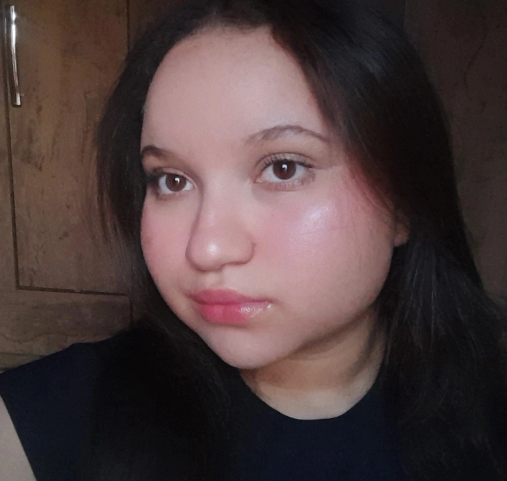
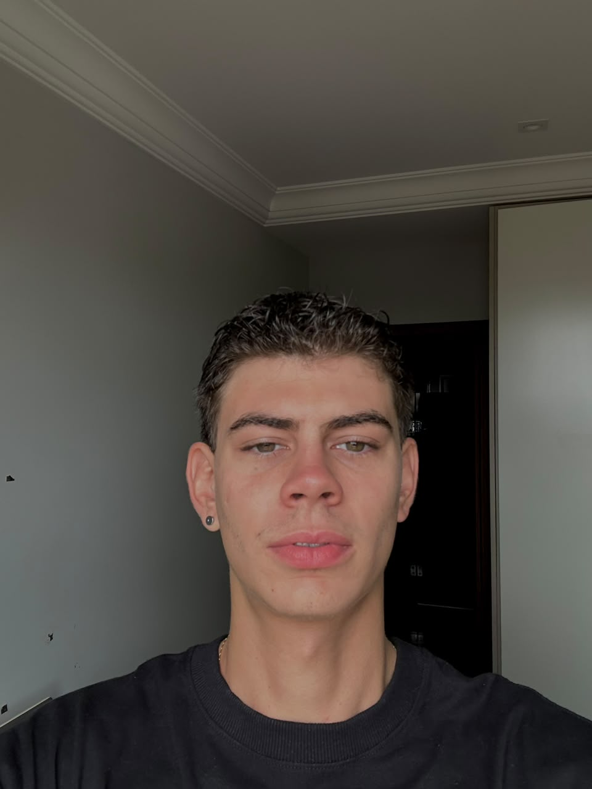
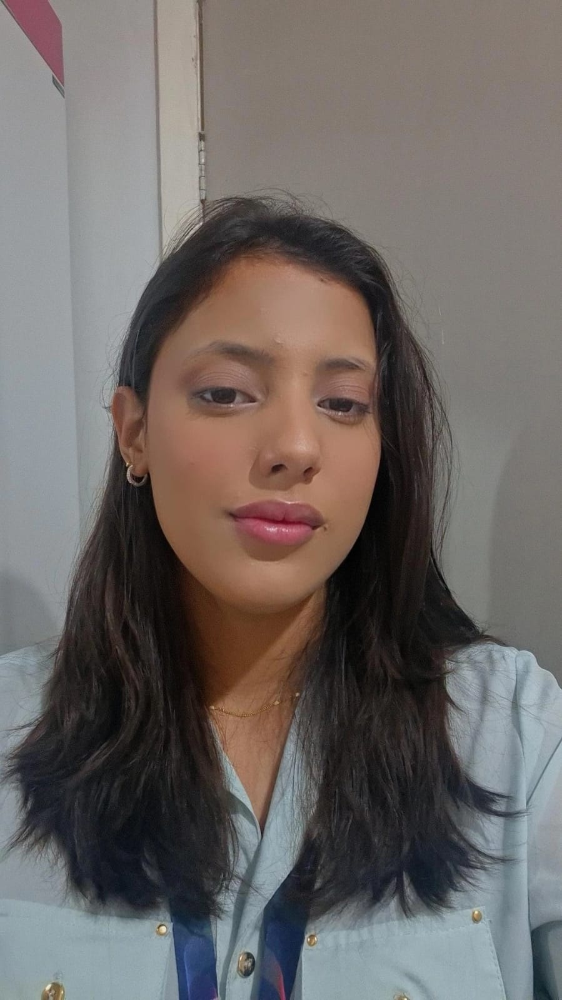

Por dentro das eleições: os bastidores que o eleitor não vê
Por volta das 9h da manhã, a fila já ocupava o corredor do Colégio Parigot de Souza, em Rolândia, quando a votação precisou ser interrompida. Um dos botões da urna eletrônica havia parado de registrar os números digitados pelos eleitores. Enquanto técnicos eram acionados para resolver o problema, a fila aumentava e a impaciência também.
“Tinha gente falando: ‘estão roubando’, lembra Clara Szymula, de 21 anos, que trabalhava como mesária voluntária pela primeira vez nas eleições municipais de 2024.
O problema foi resolvido ainda no local e a seção voltou a funcionar normalmente. Para quem estava na fila, o episódio durou poucos minutos. Nos bastidores, porém, a movimentação já havia começado muito antes daquele domingo.
O processo eleitoral
As eleições não começam quando o eleitor entra na cabine de votação. Meses antes da abertura das seções, cartórios eleitorais já passam a funcionar em ritmo diferente. O movimento aumenta conforme se aproximam os últimos dias para regularização do título, transferência de domicílio eleitoral e atualização cadastral.
Enquanto as campanhas ocupam as ruas, técnicos começam a preparar urnas, testar sistemas e organizar os locais de votação.
Segundo Ricardo Pereira, servidor do Tribunal Superior Eleitoral (TSE), grande parte desse trabalho acontece longe da atenção do público. “Normalmente o eleitor chega, vê a urna pronta para votar e não conhece um pouco dos bastidores”, afirma.
Na prática, a preparação precisa acontecer ao mesmo tempo em milhares de seções espalhadas pelo país. Segundo o Tribunal Superior Eleitoral (TSE), as eleições de 2026 reúnem o maior eleitorado da história brasileira: são 158 milhões de pessoas aptas a votar, distribuídas em 2.637 zonas eleitorais, cerca de 500 mil seções e aproximadamente 94 mil locais de votação. No exterior, mais de 1 milhão de brasileiros também estão aptos a participar do processo. Antes de chegar às escolas, as urnas já passaram por etapas de configuração, conferência e lacração.
🎙️ Entrevista Com Especialista - Advogado eleitoral Rafael Moraes
Organização e logística
No domingo de votação, quase tudo precisa funcionar ao mesmo tempo. Ainda nas primeiras horas da manhã, urnas, documentos e equipes já estão distribuídos pelos locais de votação. Técnicos permanecem de prontidão para resolver problemas sem comprometer o andamento das seções.
Quando uma falha acontece, o impacto costuma ser imediato. Foi o que aconteceu na seção onde Clara trabalhava em Rolândia. Enquanto os técnicos tentavam resolver o problema da urna, eleitores se acumulavam na fila e começavam a desconfiar do sistema.
Situações assim fazem parte da rotina das equipes espalhadas pelos locais de votação. Em alguns casos, o problema é resolvido rapidamente. Em outros, a urna precisa ser substituída.
Carla Russi, que trabalhou como presidente de mesa em Cambé, lembra de uma eleição em que a seção demorou quase uma hora para começar a funcionar por causa de uma falha técnica. “A fila já estava enorme e as pessoas começaram a xingar, dizendo que era fraude”, conta. Mas os desafios nem sempre envolvem equipamentos.
Daniela Biudes, que atua no apoio logístico em uma escola de Marília, no interior de São Paulo, lembra de uma situação em que uma pessoa obesa não conseguiu votar por falta de uma cadeira de rodas adequada para levá-la até a seção eleitoral.
“A escola tinha apenas cadeiras infantis, pequenas demais”, relata.
Além da parte técnica, equipes também passam o dia organizando filas, orientando eleitores e tentando resolver situações inesperadas dentro das escolas.
🎙️ Seções Eleitorais
Treinamento de equipes
Mas a estrutura das eleições não depende apenas da tecnologia. Por trás das urnas, existe também o trabalho de milhares de pessoas responsáveis por manter o funcionamento das seções eleitorais ao longo do dia. Grande parte dessa operação depende dos mesários e das equipes de apoio.
Antes da votação, eles recebem orientações sobre atendimento aos eleitores, conferência de documentos e funcionamento das seções. Mesmo assim, boa parte do trabalho envolve lidar com situações que fogem completamente do previsto.
Em uma das eleições em que trabalhou no apoio logístico em Marília, Daniela Biudes precisou lidar com um eleitor idoso que insistia para que a equipe dissesse o número do candidato em quem ele queria votar.
Segundo ela, qualquer orientação poderia ser interpretada como indução de voto. A solução encontrada foi indicar ao eleitor uma lista com nomes, números e partidos dos candidatos.
Os mesários também são responsáveis por conferir documentos e verificar a identidade dos eleitores quando a biometria não funciona.
Larissa Morellato, que já trabalhou como mesária em Londrina, lembra de uma eleitora que tentou votar usando uma cópia de RG. Como a biometria não reconhecia a digital, a equipe começou a confirmar informações básicas. “O nome da mãe não batia. O do pai também não”, conta.
Segundo Larissa, a mulher passou a gritar que estava sendo vítima de perseguição política quando foi impedida de votar. A Guarda Municipal precisou ser acionada.
🎙️ Consulta do local de votação
Tecnologia e segurança
Boa parte das dúvidas e desconfianças levantadas por eleitores durante as eleições envolve justamente a segurança das urnas eletrônicas e a confiabilidade do sistema de votação.
Porém, muito antes da abertura das seções, as urnas já passaram por testes, auditorias e verificações feitas pela Justiça Eleitoral e por entidades fiscalizadoras.
Segundo o advogado eleitoral Rafael Moraes, o sistema brasileiro envolve diferentes etapas de conferência antes e depois da votação.
Entre elas está a emissão da chamada “zerésima”, documento que comprova que a urna não possui votos registrados antes do início da votação.
Também participam do processo representantes da Justiça Eleitoral, Ministério Público, Ordem dos Advogados do Brasil (OAB) e fiscais partidários. “O sistema brasileiro trabalha com várias etapas de conferência”, afirma.
Ao final da votação, cada urna emite o chamado boletim de urna, documento que reúne a contagem de votos registrada naquela seção eleitoral. O material pode ser conferido por fiscais partidários e também pela população.
Carla Russi lembra que, durante o segundo turno das eleições presidenciais de 2018, um fiscal partidário começou a acusar a seção de fraude após não conseguir receber uma cópia do boletim de urna. Segundo ela, o número de impressões disponíveis já havia acabado. Mesmo assim, episódios de desinformação ainda fazem parte da rotina das equipes.
🎙️ Combate à Desinformação
Um processo que vai além das urnas
Quando o primeiro eleitor confirma o voto na urna, toda uma estrutura construída ao longo de meses já está em funcionamento". Para a maior parte da população, tudo isso passa despercebido.
O eleitor normalmente encontra apenas os minutos finais de uma operação que começou muito antes da abertura das seções.
Enquanto milhões de pessoas passam rapidamente pela cabine de votação, técnicos, mesários e equipes de apoio tentam fazer com que tudo continue funcionando até o fim do dia.
Para Rafael Moraes, uma das formas de fortalecer a confiança no sistema é justamente aproximar os eleitores desses bastidores.
“Aquele eleitor que duvida da urna eletrônica, eu convido para participar como mesário, acompanhar os treinamentos e entender como tudo funciona”, afirma. No fim das contas, apertar “confirma” é apenas a parte mais visível de um processo muito maior.
🎙️ Fim das votações
Curiosidades sobre as eleições
Teste seus conhecimentos
Nossa Equipe
Manoel Cardeal da Costa Neto
Líder

Eduardo Machado
Líder

Emanuelly Araujo
Pauteira e Redatora
Fernanda Miasato
Repórter
Igor Vieira
Repórter

Julia de Souza
Repórter

João Pedro Albano
Apresentador e Cinegrafista

Mari Oenning
Editora/Cinegrafista

Aysha Santos
Programadora